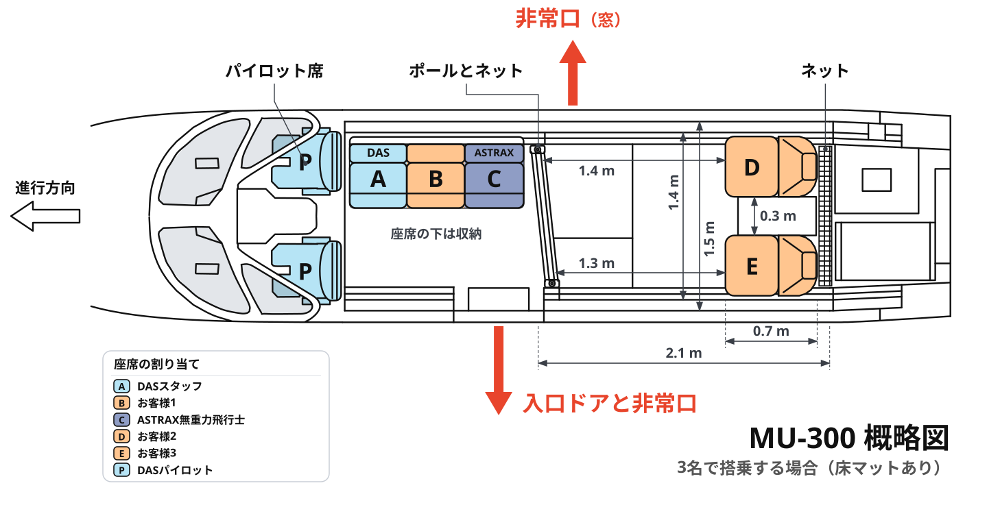
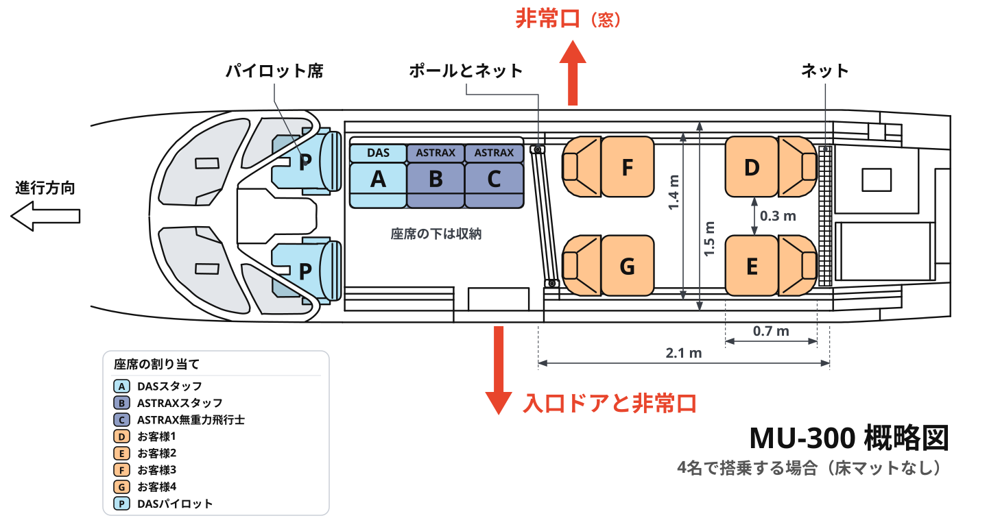
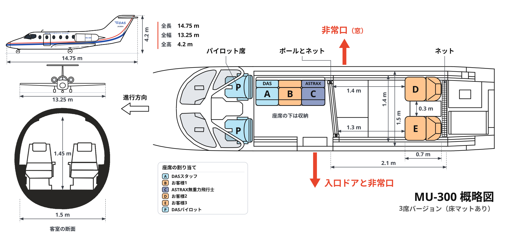

人数ごとの違い（一覧）
無重力飛行の機体は MU-300 です。搭乗人数によって、機内の座席の配置が変わります。
| 搭乗人数 | 座席の形 | 床マット | 自由な浮遊 | お客様の席 |
|---|---|---|---|---|
| 3名 | フリースペース型 | あり | できる（後ろのフリーエリアで、ローテーション） | B・D・E |
| 4名 | 座席4席型 | なし | できない（座ったまま） | D・E・F・G |
| 5名 | 座席4席型 | なし | できない（座ったまま） | B・D・E・F・G |
| 6名 | ASTRAXの無重力飛行士が搭乗しない形 | なし | できない（座ったまま） | B・C・D・E・F・G |
床のクッションマット（1〜4）は取り外し式です。3名のときはマットを敷いて、後ろを自由に浮遊できる「フリーエリア」にします。4名以上のときはマットを外して座席を足します。座席の入れ替えや座り方は、DAS（ダイヤモンドエアサービス）の指示に従います。前方ベンチは、コックピットに直通のため、後ろのエリアより規制が強くなります。
DAS（スタッフ・パイロット）お客様ASTRAX（無重力飛行士・スタッフ）
3名で搭乗する場合（フリースペース型）
後ろの座席を2席にして、床マットを敷いた「フリーエリア」で自由に浮遊できる形。

- 全員がローテーションで浮遊できます（浮遊できるのは、後ろのフリーエリアのみです）
- 通常のフライトの形です
4名で搭乗する場合（座席4席型）
フリーエリアに座席を置く形です。フリーエリアはなくなり、自由浮遊はありません（座ったまま）。

- 前方ベンチの中央は、通常はASTRAXのスタッフが座ります
- ローテーション（席の入れ替え）は、公平のためにした方がよいですが、しなくても構いません
- 前方ベンチの中央（B）には、ASTRAXのスタッフの代わりに、無料で1名が搭乗することもできます（その場合は5名と同じ考え方です）
5名で搭乗する場合（座席4席型）
フリーエリアに座席を置く形（後ろ4席）＋前方ベンチの中央に1名。フリーエリアはなく、自由浮遊はありません。

- 前方ベンチはコックピットに直通のため、後ろのエリアより規制が強くなります
- 5名が平等な立場なら、公平のためローテーションをお勧めします
- クライアントが4名で1名が無料搭乗の場合、ベンチの1名は固定でも構いませんが、後ろの4名はローテーションをお勧めします
6名で搭乗する場合（ASTRAXの無重力飛行士が搭乗しない場合）
後ろ4席（フリーエリアはありません）＋前方ベンチにお客様2名とDASスタッフ1名。

- DASスタッフの指示に厳格に従っていただきます（前方ベンチの座り方も同様。基本は、前方（左）がDASスタッフ、中央と後ろ（右）がお客様）
- ローテーションや準備を含め、すべてお客様だけで行っていただきます
- 上空でのセッティングが難しいため、無重力飛行中の ASTRAX による撮影はありません（各自での撮影は可能。機材を使いこなせれば問題ありません）
- 事前にシミュレーターで、しっかりリハーサルを行っていただきます
参考：MU-300 の機体と客室の大きさ

6名で搭乗する場合のリスクと注意事項
- 作業量が非常に多くなります。飛行中の準備作業だけでも多く、実験を加えるとさらに大変です。シミュレーターで練習できますが、無重力そのものは地上で再現できないため、本番が初めての体験になります。
- 撮影機材（カメラ・照明）は、航空法により離着陸時には外します。上空で、設置・調整・録画・停止・取り外しまで、すべてお客様が行います。
- お客様だけで行った場合、実験や撮影がうまくいかなくても、弊社も飛行機会社も責任を負えません（事前に承諾書にサインをいただきます）。初めての飛行では、失敗のリスクが特に高くなります。
- 気分が悪くなった方が出た場合は、飛行機会社のルールにより、直ちに飛行を中止して帰還します。準備に追われて心の余裕がないと、気分が悪くなりやすくなります。飛行の中止は飛行機会社が判断し、お客様にも同意していただきます。